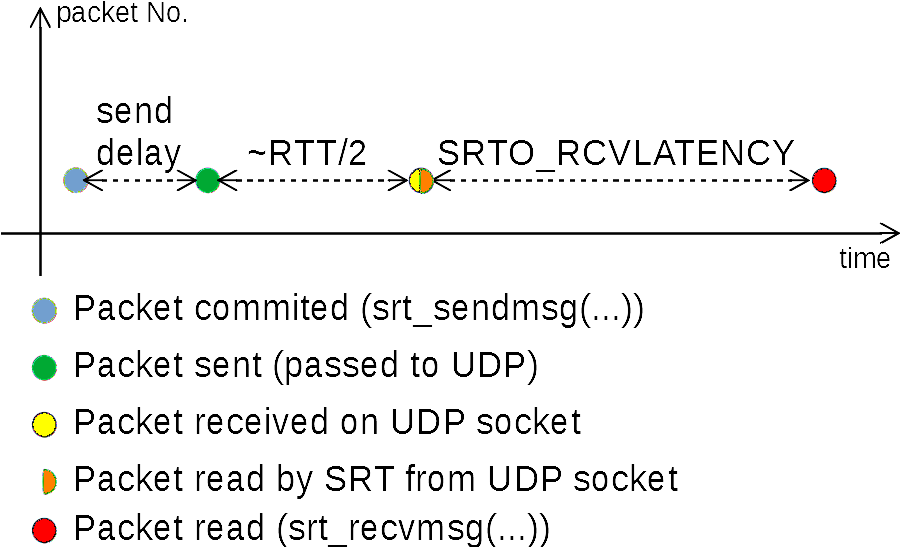

SRT Latency
SRT has an end-to-end latency between the time a packet is given to SRT with srt_sendmsg(...) and the time this very packet is received from SRT via srt_recvmsg(...).
The timing diagram illustrates those key latency points with TSBPD enabled (live mode).

End-to-end latency
The actual latency on the link will roughly be SRTO_RCVLATENCY + 1/2 × RTT0, where RTT0 is the RTT value during the handshake.
Packet Delivery Time
Packet delivery time is the time point, estimated by the receiver, when a packet should be given (delivered) to the upstream application (via srt_recvmsg(...)).
It consists of the TsbPdTimeBase - the base time difference between sender's and receiver's clock, receiver's buffer delay TsbPdDelay, a timestamp of a data packet PKT_TIMESTAMP,
and a time drift Drift.
PktTsbPdTime = TsbPdTimeBase + TsbPdDelay + PKT_TIMESTAMP + Drift
TSBPD Base Time
TsbPdTimeBase is the base time difference between local clock of the receiver, and the clock used by the sender to timestamp packets being sent. A unit of measurement is microseconds.
Initial value
The value of TsbPdTimeBase is initialized at the time of the conclusion handshake is received as:
TsbPdTimeBase = T_NOW - HSREQ_TIMESTAMP.
This value roughly corresponds to the one-way network delay (~RTT/2) between the two SRT peers.
TSBPD Wrapping Period
The value of TsbPdTimeBase can be updated during the TSBPD wrapping period. The period starts 30 seconds before reaching the maximum timestamp value of a packet (CPacket::MAX_TIMESTAMP), and ends whens the timestamp of the received packet is within [30; 60] seconds.
CPacket::MAX_TIMESTAMP = 0xFFFFFFFF, or maximum 32-bit unsigned integer value. The value is in microseconds, which corresponds to 1 hour 11 minutes and 35 seconds (01:11:35).
In other words, TSBPD time wrapping happens every 01:11:35.
During the wrapping period, a packet may have a timestamp either in [CPacket::MAX_TIMESTAMP - 30s; CPacket::MAX_TIMESTAMP] or in [0; 30s]. In the first case, the current value of TsbPdTimeBase is used. In the seconds case, TsbPdTimeBase + CPacket::MAX_TIMESTAMP + 1 is used to calculate TSBPD time for the packet.
The wrapping period ends when the timestamp of the received packet is within the interval [30s; 60s]. The updated value will be TsbPdTimeBase += CPacket::MAX_TIMESTAMP + 1.
Time Drift
The value of TsbPdTimeBase can be updated by the DriftTracer.
Time Drift Sample
Upon receipt of an ACKACK packet, the timestamp of this control packet is used as a sample for drift tracing. ACKACK timestamp is expected to be half the round-trip time ago (RTT/2). The drift time DRIFT is calculated from the current time T_NOW; the TSBPD base time TsbPdTimeBase; and the timestamp ACKACK_TIMESTAMP of the received ACKACK packet.
DRIFT = T_NOW - (TsbPdTimeBase + ACKACK_TIMESTAMP) - ΔRTT,
where ΔRTT = (RTTSample - RTT0) / 2 or the difference between the current RTT sample calculated from the ACK-ACKACK pair, and the the first RTT sample RTT0. The motivation for ΔRTT is to compensate a variation in the network delay from the clock drift estimate.
Handshake-based RTT Needed
As of SRT v1.4.4 (PR 1965) RTT0 is taken from the very first ACK-ACKACK pair.
Assuming it is the best approximation of the actual RTT0 during the handshake. However, the best estimate of the network delay during the handshake would be to estimate RTT based on the exchange of handshakes.
The base time should stay in sync with T_NOW - T_SENDER , and should roughly correspond to the network delay (~RTT/2). The value of ACKACK_TIMESTAMP should represent T_SENDER, and be ~RTT/2 in the past.
Therefore, the above equation can be considered as
DRIFT = T_NOW - (T_NOW - T_SENDER + T_SENDER) -> 0 if the link latency remains constant.
Assuming that the link latency is constant (RTT=const), the only cause of the drift fluctuations should be clock inaccuracy.
Drift Tracer should consider RTT
Time drift sample in SRT versions before v1.4.4 does not take RTT fluctuations into account. Instead an increase of RTT will be treated as a time drift. See PR 1965.
Drift Tracing and Adjustment
Drift tracing is based on accumulating the sum of drift samples.
DriftSum - the sum of the time drift samples on a MAX_SPAN number of samples.
DriftSpan is the current number of accumulated samples.
The default value of MAX_SPAN is 1000 samples.
The default value of MAX_DRIFT is 5000 μs (5 ms).
The default value of CLEAR_ON_UPDATE is true.
On each DriftSpan sample, the average drift value Drift is updated as
Drift = DriftSum / DriftSpan.
The values of DriftSpan and DriftSum are reset to 0.
If the absolute value of the Drift exceeds MAX_DRIFT (|Drift| > MAX_DRIFT), the remainder goes to OverDrift value.
The value of OverDrift is used to update the TsbPdTimeBase.
In pseudo-code it looks like this:
bool update(int64_t driftval)
{
DriftSum += driftval;
++DriftSpan;
if (m_uDriftSpan < MAX_SPAN)
return false;
if (CLEAR_ON_UPDATE)
Overdrift = 0;
Drift = DriftSum / DriftSpan;
DriftSum = 0;
DriftSpan = 0;
if (std::abs(Drift) > MAX_DRIFT)
{
Overdrift = Drift < 0 ? -MAX_DRIFT : MAX_DRIFT;
Drift -= Overdrift;
}
// Drift value was updated
return true;
}
Consider RTTVar before changin the Drift value
RTTVar expresses the variation of RTT values over time. Those variations should be considered when Drift is updated.
Class DriftTracer
The DriftTracer class has the following prototype.
template<unsigned MAX_SPAN, int MAX_DRIFT, bool CLEAR_ON_UPDATE = true>
class DriftTracer
{
public:
DriftTracer();
public:
bool update(int64_t driftval);
int64_t drift() const;
int64_t overdrift() const;
};